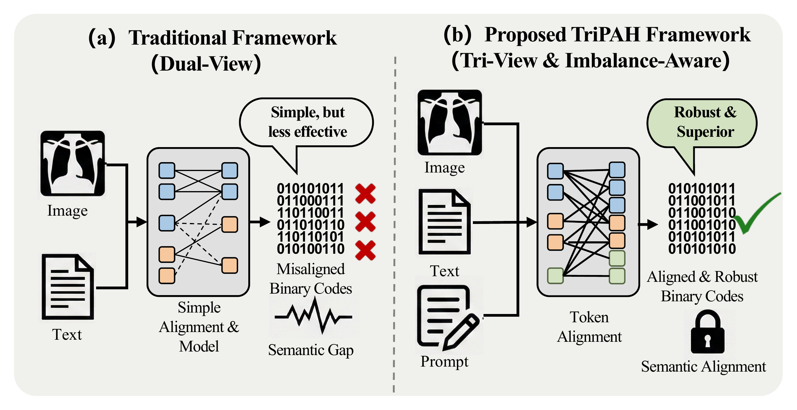
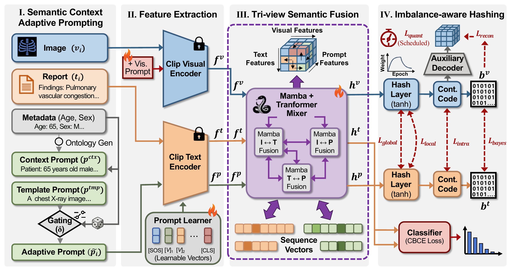
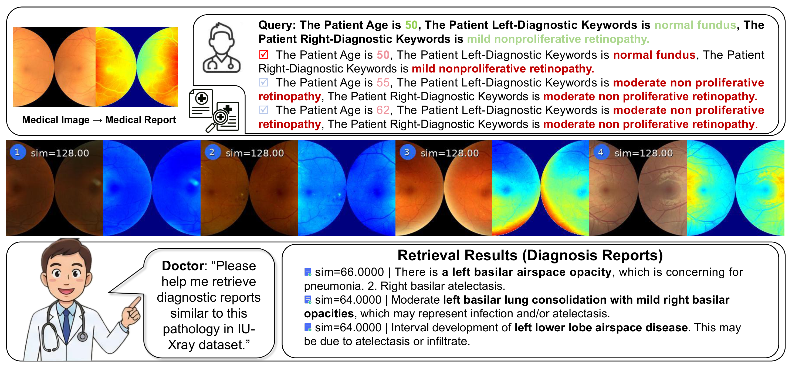

Context-adaptive prompts
Ontology-grounded patient context and stochastic gating complement raw reports with a template fallback.
ICME 2026 · Oral
Imbalance-Aware Tri-Prompt Affinity Hashing
for Cross-Modal Medical Retrieval
Big Data Institute, Central South University, Changsha, China · * Corresponding authors
Connecting medical images and reports through compact binary codes, with complementary image, text, and prompt views and imbalance-aware learning.
Clinical reports are noisy, disease labels are long-tailed, and early quantization can weaken cross-modal alignment.
TriPAH adds a patient-context prompt view to connect medical images and reports. Tri-view fusion, class-balanced supervision, and progressive quantization learn compact binary codes for bidirectional retrieval.
Read the full methodology ↗
Image, text, and prompt features interact before they become compact binary codes.

Ontology-grounded patient context and stochastic gating complement raw reports with a template fallback.
CLIP encoders extract visual, report, and prompt embeddings, with learnable prompts in the visual branch.
Mamba–Transformer blocks model image–text, image–prompt, and text–prompt interactions.
Class-balanced supervision and asymmetric quantization preserve discriminative information in binary codes.
Results reported in the paper, covering fundus photography and chest radiography at 32, 64, and 128 bits.
Mean image → text mAP
+26.2 percentage pointsMean image → text mAP
+12.6 percentage pointsMean image → text mAP
+14.5 percentage pointsMean over 32, 64, and 128 bits. Absolute gains over the strongest baseline mean in each dataset; source: Table I.
| Method | Image → Text | Text → Image | ||||
|---|---|---|---|---|---|---|
| 32 bits | 64 bits | 128 bits | 32 bits | 64 bits | 128 bits | |
| DCHMT | 0.502 | 0.518 | 0.522 | 0.707 | 0.711 | 0.718 |
| MITH | 0.501 | 0.506 | 0.524 | 0.432 | 0.443 | 0.436 |
| DSPH | 0.449 | 0.487 | 0.488 | 0.351 | 0.385 | 0.401 |
| CMCL | 0.531 | 0.527 | 0.542 | 0.390 | 0.393 | 0.407 |
| CICH | 0.542 | 0.528 | 0.525 | 0.813 | 0.819 | 0.931 |
| MSACH | 0.665 | 0.669 | 0.690 | 0.888 | 0.889 | 0.901 |
| TriPAH Ours | 0.936 | 0.939 | 0.937 | 0.989 | 0.971 | 0.972 |
ODIR-5K: binocular fundus images with 8 disease labels.
All values are transcribed from Table I of the supplied paper. A dash indicates an unreported result.
Table III: end-to-end code generation and database retrieval on the paper's evaluation setup. These are total benchmark times, not per-query latency.
Qualitative examples from ODIR-5K and IU-Xray illustrate retrieval across different imaging modalities.

Read the paper for the full formulation, dataset splits, baseline comparisons, and ablations. The repository includes training, evaluation, and dataset preparation code.
@article{bian2026tripah,
title={TriPAH: Imbalance-Aware Tri-Prompt Affinity Hashing for Cross-Modal Medical Retrieval},
author={Bian, Jiaming and Li, Songming and Song, Yurui and Chen, Yunfei and Cao, Yichao and Long, Jun},
journal={arXiv preprint arXiv:2606.27010},
year={2026}
}